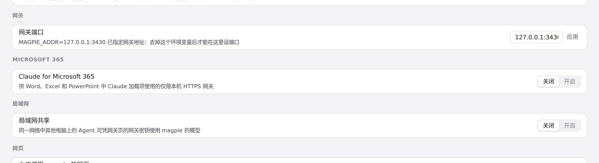
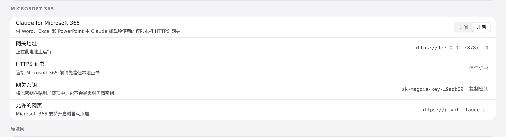
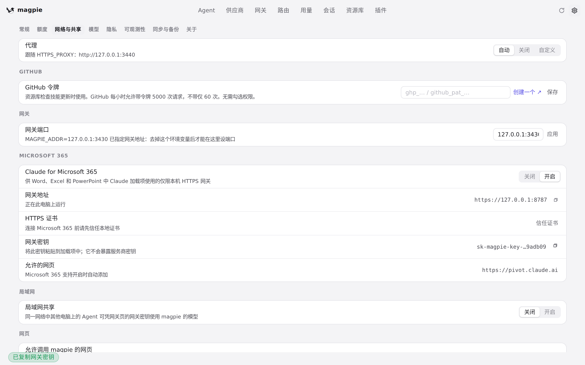

#1331 界面预览
commit bf4bf59 · 回到 PR · 在设置 ›「网络与共享」里新增「Microsoft 365」一节：一个关闭/开启的分段开关，开启后显示仅限本机的 HTTPS 网关地址、证书信任按钮、网关密钥（可复制）以及自动加入的允许网页，并补齐了 zh/zh-TW/ja/de 的对应文案。
红线是鼠标走过的轨迹，红色圆环是一次点击；底部文字是这一步在做什么。空格暂停，← → 逐段查看。

设置里的 Microsoft 365 一节 · 关闭状态下的「Microsoft 365」一节

设置里的 Microsoft 365 一节 · 点击「开启」后的「Microsoft 365」一节

复制网关密钥 · 点击「复制密钥」后的页面